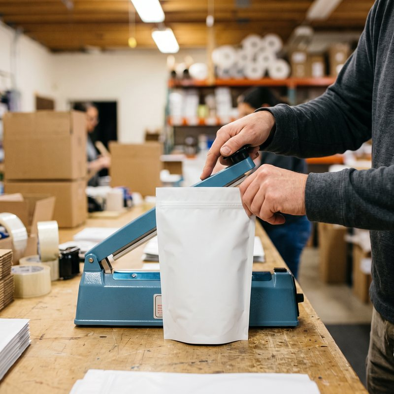
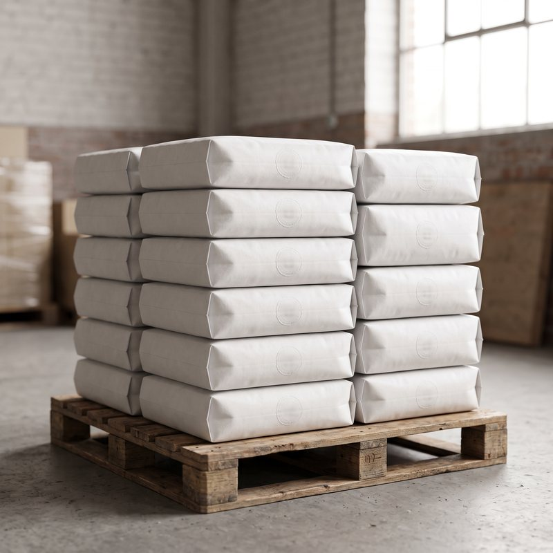
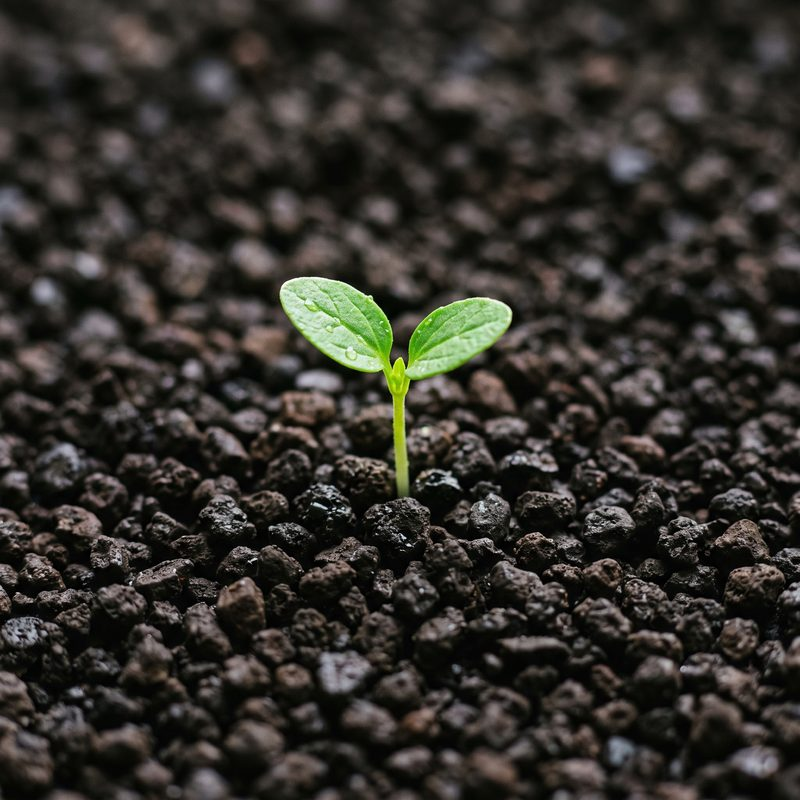
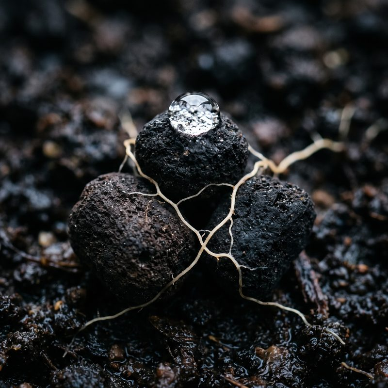
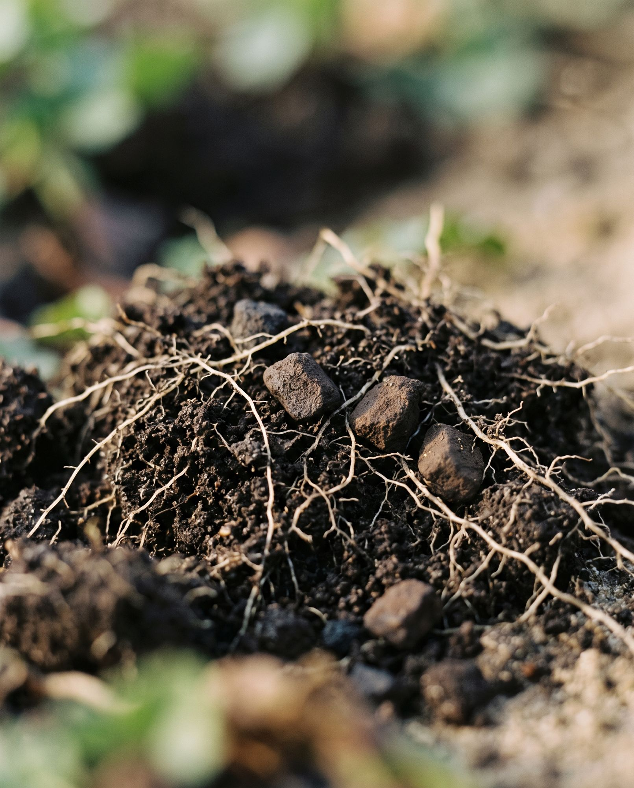
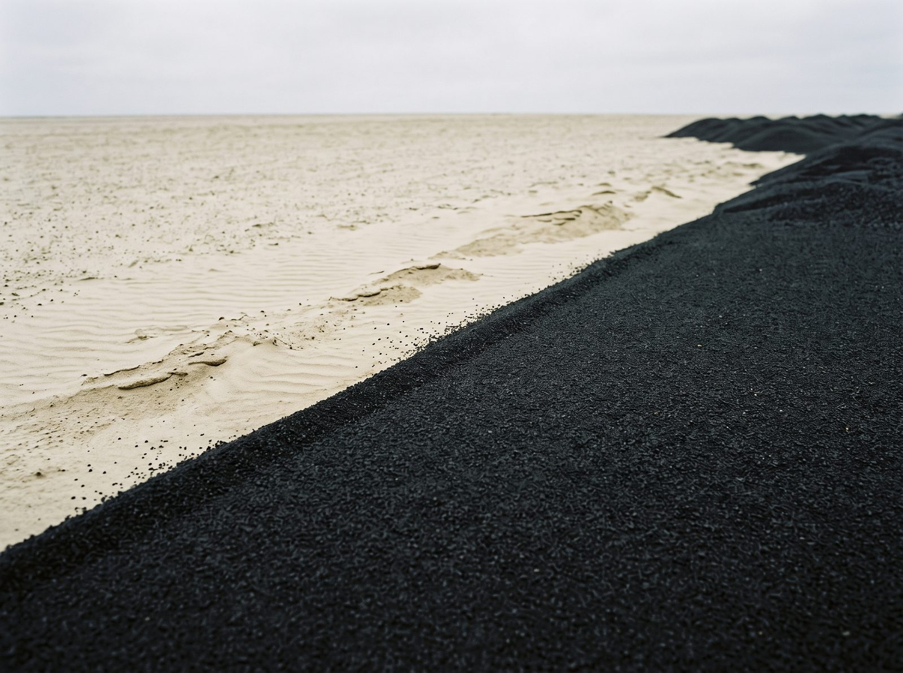
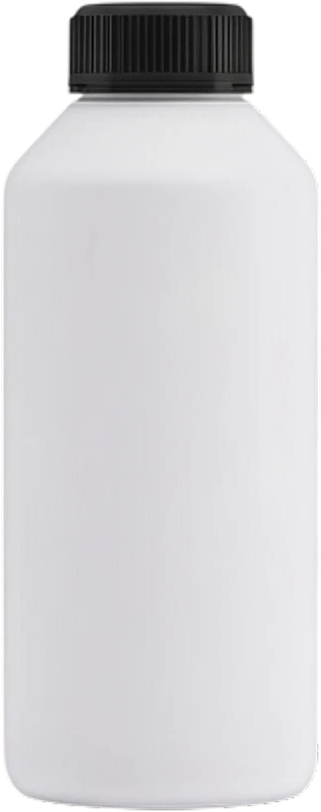
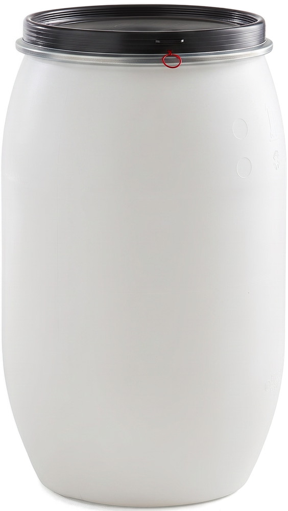
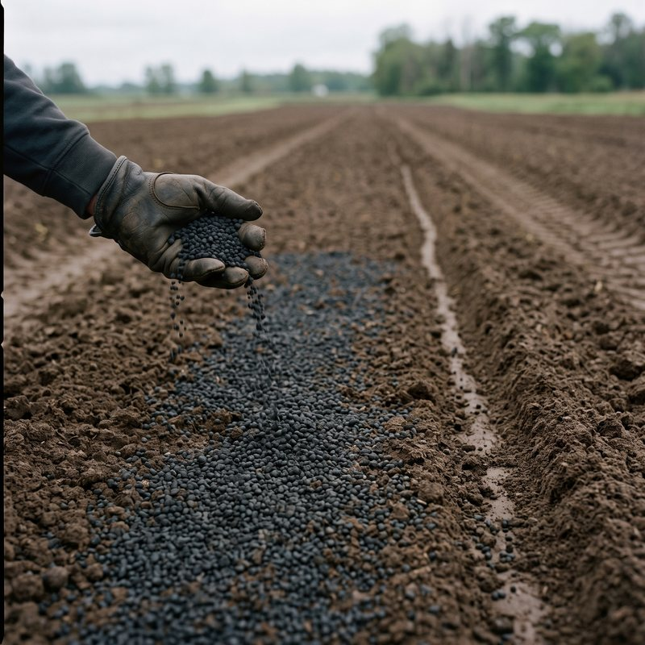

Z polskiego lignitu i leonardytu robimy poprawiacze gleby: odbudowują próchnicę, strukturę, retencję wody i życie biologiczne.
-
Polski, rodzinny producent

-
Rejestracje MRiRW – zakres per produkt

-
Certyfikaty ekologiczne – zakres per produkt

- Polski, rodzinny producent
- Rejestracje MRiRW – zakres per produkt
- Certyfikaty ekologiczne – zakres per produkt
Która rodzina jest dla Ciebie?
Cztery rodziny produktów własnych. Wybierz rodzinę, a zobaczysz, w jakiej postaci jest produkt, co się z nim robi i dla kogo jest – stąd przejdziesz wprost na jego stronę.
Carbomat Eco
Jeden składnik, który pracuje w glebie latami
- Postać
- surowy polski lignit, frakcjonowany i odsiewany; 0,1–2 · 2–4 · 4–8 mm (Carbomat Eco Ściółka 8–20 mm)
- Sposób aplikacji
- Wymieszaj z glebą lub stwórz własną mieszankę podłoża. Carbomat Eco Ściółka: rozsyp wokół roślin lub w rzędach – bez mieszania.
- Dla kogo
- Każdy rodzaj gleby o niskiej zawartości materii organicznej bądź poprawy struktury, uprawy doniczkowe
- Warianty
- dodatek do gleby w dwóch odmianach pH (4,5–5,0 i 6,0–6,5) oraz Carbomat Eco Ściółka – wyłącznie o niższym odczynie
Carbomat Mata Uprawowa
Nowa generacja mat uprawowych dla profesjonalistów
- Postać
- rękaw 100 × 20 × 8 cm, pojemność 19 l; skład: 80% frakcje lignitu + 20% krótkie włókno kokosowe
- Sposób aplikacji
- rękaw układany pod rośliny; jednorazowe nawodnienie i moczenie 72 h przed sadzeniem, potem 2 skośne otwory drenażowe
- Dla kogo
- Uprawy bezglebowe pod osłonami – szklarnie i tunele. Technologię mamy dla pomidora, ogórka i truskawki.
- Warianty
- jeden format rękawa; produkt dla upraw profesjonalnych – sprzedaż od palety w górę
Carbomat Humic
Jeden produkt, trzy zastosowania: kondycjoner, nawóz, biostymulator
- Postać
- sypki, przetworzony lignit do formy węgla aktywowanego; 3 frakcje: ziemista 0,1–2 mm, 2–4 mm, 4–8 mm
- Sposób aplikacji
- rozrzut po powierzchni – pasowo lub strip-till, wymieszanie z wierzchnią warstwą gleby do 10 cm. W ogrodzie: wymieszaj z glebą lub podłożem albo przysyp powierzchnię.
- Dla kogo
- Ten sam produkt, dwa światy: pole i ogród. Dziś przede wszystkim uprawy polowe zbóż i warzyw, ale sprawdzi się też w doniczkach, warzywnikach, zielnikach i na rabatach. Odczyn zasadowy (pH 9–11) – nie stosuj pod rośliny kwasolubne; dla nich sięgnij po Carbomat Eco o niższym pH.
- Warianty
- trzy frakcje: ziemista 0,1–2 mm, 2–4 mm i 4–8 mm; ten sam produkt na pole i do ogrodu
Carbohumic
Próchnica w płynie do regeneracji gleby i biostymulacji roślin
- Postać
- płynny ekstrakt substancji humusowych z lignitu i leonardytu; filtrowany 187 mesh / 80 µm, niefiltrowany 20 mesh
- Sposób aplikacji
- filtrowany – do opryskiwaczy, belek herbicydowych, nawadniania kropelkowego. Niefiltrowany – do intensywnej aplikacji doglebowej z beczki, mauzera i innych zbiorników.
- Dla kogo
- pole, sad, plantacja i szkółka; linia OGRÓD – do ogrodu przydomowego i działkowego
- Warianty
- filtrowany, niefiltrowany i OGRÓD. Nalistnie w tej samej rodzinie pracują Maxi Plus i Calbor.
Technikalia czterech rodzin · w suchej masie
| Parametr | Carbomat Eco | Carbomat Mata Uprawowa | Carbomat Humic | Carbohumic filtrowany |
|---|---|---|---|---|
| Postać | sypki | rękaw uprawowy | sypki | płynny |
| Baza odniesienia | surowy lignitbez obróbki poza frakcjonowaniem | gotowe podłoże80% lignit + 20% włókno kokosowe | wyekstrahowany i aktywowany koncentrat | płynny ekstrakt187 mesh / 80 µm |
| Odczyn (pH) | 4,5–5,0 · 6,0–6,5 dwie odmiany | 6,0–6,5 | 9–11 w analizie 9,84 | 8,00–10,00 |
| Sucha masa | ~87% | dane w uzupełnieniu | ~56% | 12,0–15,0% |
| Substancje humusowe | oznaczenie dla produktu – dane w uzupełnieniu | 30–40% frakcji humusowychw s.m. lignitu, który stanowi 80% składu maty | ~48%huminowe ~45% · fulwowe ~2,5% | 50–60%huminowe 41–49% · fulwowe 9–11% |
| Materia organiczna | ~92% | 80–90%w s.m. lignitu, który stanowi 80% składu maty | ~50% | 40,0–50,0% |
| Węgiel organiczny | ~51% | dane w uzupełnieniu | ~28% | ok. 54,7%wartość z dokumentu producenta |
| Azot (N) | ~0,11% | 3 / 3,2 mg/dm³N-NO₃ / N-NH₄ w świeżym podłożu – inna jednostka | ~0,64% | ok. 0,12% |
| Potas (K₂O) | ~0,6% | 156 mg/dm³K (nie K₂O) w świeżym podłożu – inna jednostka | ~11,3%≈6% na produkcie, ok. 60 kg K₂O w tonie | ok. 2,11% |
| Fosfor (P₂O₅) | ~0,5% | 107 mg/dm³P (nie P₂O₅) w świeżym podłożu – inna jednostka | ~0,02% | ok. 0,50% |
| Dokumenty |
Aktualna analiza
karta produktu w przygotowaniu
|
Zawartości podajemy w suchej masie, jeśli przy wartości nie zaznaczono inaczej. Źródła: badanie akredytowanego laboratorium PCBC S.A. (2022) i karta produktu – Carbomat Eco · analizy WZO Pleszew (2022) i badania SGGW – Mata · aktualna analiza laboratoryjna (06.2026) – Carbomat Humic · dokument producenta (29.07) i karta produktu – Carbohumic.
Dlaczego tych liczb nie porównujesz wprost
Każdy produkt ma inną postać i inną bazę odniesienia: surowy lignit, gotowe podłoże, wyekstrahowany koncentrat i płynny ekstrakt. Kolumny nie mówią więc, który produkt jest „mocniejszy" – mówią, ile czego zawiera dana postać. O efekcie w polu decyduje dostępność składników dla roślin i sposób aplikacji, nie sama zawartość w tabeli.
Carbomat Eco – 70% dotyczy surowca
Zawartość kwasów humusowych w lignitach różni się w zależności od pokładu i może sięgać nawet 70% suchej masy. To parametr surowca, nie oznaczenie gotowego produktu – a oznaczenie dla samego Carbomat Eco jest w uzupełnieniu. Z tego samego powodu nie zestawiaj tej liczby z wynikiem maty (30–40% frakcji humusowych): to dwa różne oznaczenia tego samego surowca, a nie dwie wartości tego samego parametru.
Carbomat Humic – koncentrat, nie surowiec
Carbomat Humic to wyekstrahowany i aktywowany koncentrat substancji humusowych o suchej masie ~56%, a Carbomat Eco to surowy lignit – inna postać produktu i inna baza odniesienia. Niższe liczby w kolumnie nie oznaczają słabszego produktu.
Mata i Carbohumic – jednostki i zakres
Azot, potas i fosfor maty pochodzą z analizy świeżego podłoża i są podane w mg/dm³, a nie w procentach suchej masy – w macie oznaczono pierwiastek (K, P), a nie tlenek (K₂O, P₂O₅), więc tych trzech pól nie zestawiaj w pionie. Parametry Carbohumic dotyczą wyłącznie wersji filtrowanej; rozpiska dla wersji niefiltrowanej i linii OGRÓD jest w uzupełnieniu. Produkty nalistne – Carbohumic Maxi Plus i Carbohumic Calbor – mają osobne zestawienie w sekcji Doglebowo czy nalistnie.
Wybierz, co chcesz zrobić lub problem – My dobierzemy produkt oraz procedurę.
-
Zatrzymać wodę (susza)

Carbomat Eco wmieszany w glebę buduje magazyn na wodę i składniki, a Carbomat Eco Ściółka ogranicza odparowanie z powierzchni.
pole przed siewem · ściółkowanie -
Odbudować próchnicę

Carbohumic to próchnica w płynie do bieżącej odbudowy, a Carbomat Eco wnosi trwałą materię organiczną raz, na lata.
nowe nasadzenie · produkt płynny -
Jakość i trwałość owocu

Carbohumic Calbor nalistnie dostarcza wapń i bor: jędrność, kaliber i trwałość pozbiorcza owoców.
wsparcie w sezonie -
Lepszy start i wzrost
Carbomat Humic działa od pierwszych dni i może zastąpić nawozy startowe; Carbohumic filtrowany wspiera roślinę na początku wegetacji.
pole przed siewem · nowe nasadzenie -
Uregulować pH gleby

Odczyn regulujemy w dwie strony: Carbomat Humic (pH 9–11) podnosi odczyn gleb zakwaszonych, a Carbomat Eco o pH 4,5–5,0 jest dla roślin kwasolubnych.
gleba zakwaszona · kwasolubne -
Podłoże bez torfu

Lignit jest trwałym, organicznym komponentem własnych mieszanek, a Carbomat Mata Uprawowa zastępuje wełnę mineralną i kokos.
własne podłoże · uprawa bezglebowa
Dziesięć sytuacji, w których klienci do nas trafiają
-
Gleba jest odkryta tylko raz. To jedyny moment, kiedy możesz wnieść trwałą materię organiczną na całą głębokość, bez rozkopywania uprawy w kolejnych latach.
-

wymieszaj z glebą, 10–15% objętości warstwy ornej lub przygotowanego podłoża.
Kup teraz – Carbomat Eco pH 6,0–6,5 -

do zalewania dołów i bruzd nasadzeniowych, moczenia brył korzeniowych, korzeni, bulw lub kłączy (stężenie 3%).
Kup teraz – Carbohumic niefiltrowany (20 mesh)
-
-
Uprawy polowe jare i ozime, siane i sadzone. Produkt ma wejść w wierzchnią warstwę gleby razem z zabiegiem, który i tak wykonujesz.
-
co najmniej 250 kg/ha po całej powierzchni, co najmniej 150 kg/ha pasowo, 100–120 kg/ha w strip-till. Może zastąpić nawozy startowe.
Kup w sklepie -
po powierzchni, przynajmniej 20 l/ha w stężeniu 1–3%, najlepiej przed lekkim deszczem albo nawadnianiem.
Kup teraz – Carbohumic filtrowany (187 mesh)
-
-
Nie chcesz ruszać gleby, ale chcesz ją chronić przed erozją i nadmiernym odparowaniem, a przy okazji wzbogacić w materię organiczną.
W przeciwieństwie do kory nie powoduje głodu azotowego.
-
rozsyp wokół roślin lub w rzędach, bez mieszania. Warstwa 3–5 cm, odświeżana co kilka lat.
Kup teraz – Carbomat Eco Ściółka pH 4,5–5,0
-
-
Borówka, wrzosowate, różaneczniki, azalie, część hortensji. Tu o wyborze produktu decyduje odczyn, a nie zawartość organiki.
Produkt o odczynie zasadowym, nie stosuj pod rośliny kwasolubne jak borówka i inne wrzosowate, różaneczniki, niektóre hortensje, azalie itd. – to dotyczy Carbomat Humic (pH 9–11). Dla nich sięgnij po Carbomat Eco o niższym pH.
-
Carbomat Eco w odmianie 4,5–5,0 pH
dodatek do gleby przy sadzeniu.
Kup teraz – Carbomat Eco pH 4,5–5,0 -
dostępna wyłącznie o niższym odczynie; obniża pH gleb i podłoży pod istniejące uprawy kwasolubne.
Kup teraz – Carbomat Eco Ściółka pH 4,5–5,0
-
-
Naturalnie wysokie pH produktu wspomaga ograniczanie zakwaszenia gleby oraz zwiększa jej zdolności buforowe – zabieg można połączyć z wapnowaniem.
W ogrodzie na glebach kwaśnych lub nieurodzajnych – dawka podwójna.
-
Carbomat Humic (pH 9–11)
idealny do użyźniania i stabilizowania pH; najlepsze efekty daje zastosowanie bezpośrednio po wapnowaniu.
Kup w sklepie
-
-
Szklarnia lub tunel, uprawa hydroponiczna albo kontenerowa. Szukasz podłoża, które nie jest wyłącznie podporą dla korzeni.
Zamówienia realizujemy od palety w górę – dobierzemy ofertę i pomożemy przy starcie uprawy.
-

rękaw 100 × 20 × 8 cm, minimum 5 sezonów użytkowania. Technologię mamy dla pomidora, ogórka i truskawki.
Kup w sklepie
-
-
Zależy Ci na szybkim, równomiernym i precyzyjnym dostarczeniu substancji humusowych do gleby, bez rozsiewu i mieszania.
Produktu niefiltrowanego nie stosujemy do fertygacji ani urządzeń z filtrami. Sypkiego Carbomat Humic też nie podajemy przez opryskiwacze i instalacje fertygacyjne – nierozpuszczalne huminy mogą zapchać filtry i dysze.
-
Carbohumic filtrowany (187 mesh / 80 µm)
opryskiwacze, belki herbicydowe, zraszacze, fertygacja i systemy nawadniające z dokładnymi filtrami.
Kup teraz – Carbohumic filtrowany (187 mesh)
-
-
Doniczki, warzywnik, zielnik, rabaty i trawnik. Skala domowa, ale mechanizm ten sam: baza doglebowa raz, płyn cyklicznie w sezonie.
-
10–20% udziału mieszanki gotowego podłoża albo drenaż na spodzie doniczki, warstwa ok. 5 cm.
Kup teraz – Carbomat Eco pH 6,0–6,5 -

20–30 g na 10 l podłoża albo 500 g na 10 m² gleby, wymieszane do 10 cm.
Kup w sklepie -

w ogrodzie cykliczne podlewanie co 10–14 dni w stężeniu 1%.
Kup teraz – Carbohumic niefiltrowany (20 mesh) -

linia przygotowana pod ogród przydomowy i działkowy; dawki dla tego wariantu – dane w uzupełnieniu.
Kup teraz – Carbohumic Ogród
-
-
Szybkie wsparcie rośliny wtedy, gdy liczy się czas: słaby wigor, regeneracja po stresie, faza intensywnego wzrostu albo budowa jakości owocu.
Calbor stosujemy wyłącznie w uprawach sadowniczych – taki jest zakres decyzji MRiRW G-1733/25. W rejestrze to środek doglebowy; program nalistny w owocowaniu to zalecenia producenta (poradnik). Produktów nalistnych nie łączymy ze środkami ochrony roślin – zabrania tego instrukcja MRiRW. Oprysk nalistny nie zastąpi żyznej gleby ani prawidłowego nawożenia korzeniowego.
-
wigor, metabolizm i regeneracja.
Kup teraz – Carbohumic Maxi Plus -
wapń, bor i jakość tkanek, po kwitnieniu i w czasie wzrostu owoców.
Kup teraz – Carbohumic Calbor
-
-
Lignit jest trwałym, organicznym komponentem podłoża – gruzełkowata, przepuszczalna struktura i stabilny skład fizyko-chemiczny.
-
komponent podłoży; w mieszankach 10–20% objętości. Decyzja MRiRW G-971/20 dopuszcza udział 20–30% objętości.
Kup teraz – Carbomat Eco pH 6,0–6,5 -
do wzbogacania podłoży, kompostów i obornika.
Kup w sklepie
-
Naprawiamy glebę, wzmacniamy roślinę.
Wszystko, co robimy, opiera się na jednym surowcu: młodym węglu brunatnym. Pięć rzeczy, które warto o nim wiedzieć, zanim wybierzesz konkretny produkt.
Naprawiamy glebę, wzmacniamy roślinę.

Węgiel, który nie musi być paliwem
Lignit to najmłodsza forma węgla brunatnego – materia organiczna z prastarych drzew, zatrzymana na etapie stabilnego i trwałego humusu. Zamiast spalać go i emitować CO₂, można wprowadzić go do gleby: wspiera jej zdrowie i żyzność oraz sekwestrację CO₂, czyli długotrwałe wiązanie dwutlenku węgla.
Najbardziej zasobna substancja organiczna w kwasy humusowe i fulwowe
W odróżnieniu od młodej materii organicznej, jak kompost czy biohumus, lignit zawiera dojrzały humus o trwałej strukturze. Zwiększa pojemność sorpcyjną gleby, zatrzymuje wodę i składniki pokarmowe i działa długofalowo. Kwasy humusowe mogą stanowić w lignitach nawet 70% suchej masy.
- dojrzałe formy humusu o trwałej strukturze
- większa pojemność sorpcyjna gleby
Lignit to najbardziej dojrzała i stabilna forma materii organicznej
O wartości materii organicznej decyduje nie tylko jej ilość, ale stopień przekształcenia i stabilności. Świeża biomasa, kompost czy torf zawierają głównie młodą materię, która szybko się rozkłada. Lignit to efekt milionów lat humifikacji – jego stabilna materia humusowa działa w glebie znacznie dłużej.
Trzy frakcje substancji humusowych – trzy różne role
Każda frakcja działa inaczej, razem – na kilku poziomach naraz:
- huminy – najtrwalsze, stabilizują strukturę gleby,
- kwasy huminowe – budują kompleks sorpcyjny,
- kwasy fulwowe – najbardziej mobilne, przenoszą składniki.
Postać produktu decyduje o tempie, nie o zadaniu
To samo zadanie, różne tempo działania:
- Carbohumic, płynny – działa od razu, rozchodzi się z wodą,
- Carbomat Humic – działa od pierwszych dni i zostaje w glebie na dłużej,
- Carbomat Eco – sypki lignit, działa stopniowo i najdłużej.
Najbardziej zasobna substancja organiczna w kwasy humusowe i fulwowe
W przeciwieństwie do młodej materii organicznej, takiej jak komposty, biohumus, lignina czy produkty roślinne, lignit zawiera dojrzałe formy humusu o złożonej, trwałej strukturze. Dzięki temu wykazuje znacznie większą zdolność do poprawy właściwości gleby – zwiększa jej pojemność sorpcyjną, wspiera zatrzymywanie wody i składników pokarmowych oraz tworzy korzystne środowisko dla rozwoju korzeni i mikroorganizmów glebowych.
To właśnie wysoki stopień humifikacji sprawia, że lignit działa długofalowo, pomagając odbudować żyzność i strukturę gleby. Zawartość kwasów humusowych w lignitach różni się w zależności od pokładu, ale może sięgać nawet 70% suchej masy – to parametr surowca, nie gotowego produktu.
Lignit to najbardziej dojrzała i stabilna forma materii organicznej
O wartości materii organicznej nie decyduje wyłącznie jej ilość, ale przede wszystkim stopień jej przekształcenia i stabilności. Świeża biomasa, kompost czy torf zawierają głównie młodszą materię organiczną, która stosunkowo szybko ulega dalszemu rozkładowi.
Lignit natomiast jest efektem milionów lat naturalnej humifikacji i kondensacji związków organicznych i zawiera wysoko przekształconą, stabilną materię humusową o znacznie większej trwałości i zdolności do długotrwałego oddziaływania w glebie. Świeże nośniki materii organicznej jak kompost, obornik, biohumus są dopiero na początku tej drogi.
Całkowita zawartość substancji organicznej (% suchej masy) pokazuje „ile materii organicznej jest w materiale”. Stopień humifikacji i stabilności tej materii pokazuje „jak długo i jak skutecznie działa w glebie”.
Trzy frakcje substancji humusowych – trzy różne role
Substancje humusowe występują w kilku frakcjach, które różnią się trwałością, rozpuszczalnością i sposobem oddziaływania na glebę:
- Huminy są frakcją nierozpuszczalną i najbardziej stabilną. Pozostają w glebie najdłużej, wspierają tworzenie trwałej próchnicy, wiążą się z cząstkami mineralnymi i pomagają stabilizować strukturę agregatową gleby.
- Kwasy huminowe odpowiadają przede wszystkim za budowę kompleksu sorpcyjnego. Wspomagają łączenie drobnych cząstek gleby w większe agregaty, ograniczają wymywanie składników pokarmowych oraz poprawiają zdolność gleby do zatrzymywania wody i kationów odżywczych.
- Kwasy fulwowe są najmniejszą i najlepiej rozpuszczalną frakcją. Przemieszczają się w roztworze glebowym szybciej niż pozostałe substancje humusowe, dzięki czemu mogą wspierać uruchamianie, wiązanie i przemieszczanie składników pokarmowych w obrębie strefy korzeniowej.
Połączenie tych frakcji sprawia, że produkty humusowe działają na kilku poziomach jednocześnie.
Postać produktu decyduje o tempie, nie o zadaniu
Carbohumic w wersji płynnej wybieramy wtedy, gdy zależy nam na szybkim, równomiernym i precyzyjnym dostarczeniu substancji humusowych do gleby. W procesie ekstrakcji aktywne frakcje humusowe zostają uwolnione z lignitu i przeniesione do zawiesiny, dlatego po aplikacji mogą od razu rozprzestrzeniać się wraz z wodą w strefie korzeniowej.
Carbomat Eco działa inaczej. Jest sypkim, naturalnym lignitem, który po wymieszaniu z glebą stopniowo uwalnia swoje właściwości. Stanowi rozwiązanie ukierunkowane na długofalową poprawę zasobności gleby, szczególnie na stanowiskach lekkich, zdegradowanych lub chronicznie ubogich w materię organiczną. Jest więc inwestycją wieloletnią, ale wymaga rozsiewu, większej ilości produktu na start oraz – przeważnie – mechanicznego wymieszania z glebą.
Carbomat Humic stoi pośrodku: to ten sam rodzaj surowca poddany ekstrakcji i aktywacji, więc działa już od pierwszych dni po zastosowaniu, a jednocześnie zostaje w glebie na dłużej.
Co dają – i kiedy to zobaczysz.
Efekty rozkładają się w czasie. Dlatego rozdzielamy to, co widać w sezonie, od tego, co buduje się latami.
-
Carbohumic filtrowany
Biostymulacja doglebowa (Carbohumic filtrowany, Carbomat Humic) i wzmocnienie nalistne (Maxi Plus, w sadzie Calbor): wsparcie metabolizmu, wykorzystania składników i regeneracji po stresie.
-

Carbohumic niefiltrowanyBudowa próchnicy i struktury (Carbohumic niefiltrowany, Carbomat Humic): lepsze gospodarowanie wodą, sprawniejszy kompleks sorpcyjny, aktywniejszy mikrobiom.
-
Carbomat Eco
Jednorazowy wkład lignitu (Carbomat Eco): trwała – nawet powyżej 20 lat – inwestycja w jakość i strukturę gleby, próchnicę oraz retencję wody.
Kwasy humusowe i trwałość w glebie – porównanie materiałów
| Materiał | Kwasy humusowe (s.m.) | Trwałość w glebie |
|---|---|---|
| Biohumus | 1–5% | nietrwały |
| Torf | 3–30% | kilka lat |
| Biowęgiel / węgiel aktywowany termicznie | brak | trwała struktura, bez kwasów humusowych |
| Lignit – surowiec CarboHort | do ~70% s.m. | kilkanaście do ponad 20 lat |
„Lignit” opisuje surowiec, a nie gotowy produkt; zawartość różni się w zależności od pokładu. Zawartości kwasów humusowych w naszych produktach – w tabeli technikaliów wyżej.
Optimum gleby: 50% fazy stałej, 25% wody, 25% powietrza
Porowata struktura lignitu – około 60% objętości gruzełki stanowią pory – pomaga zbliżyć glebę do tej równowagi: magazynuje wodę w mikroporach i jednocześnie poprawia napowietrzenie podłoża.
Dla dociekliwych
Kwasy humusowe są termicznie nietrwałe – powyżej około 300°C ich struktura ulega zniszczeniu, dlatego biowęgiel i węgiel aktywowany termicznie ich nie zawierają. Carbomat Humic powstaje inaczej: w procesie ekstrakcji i aktywacji substancji humusowych z lignitu, dzięki czemu najcenniejsze składniki pozostają aktywne i są łatwiej dostępne dla roślin.
Główną rolą produktów humusowych nie jest klasyczne dostarczanie składników pokarmowych, lecz przekształcanie środowiska, w którym rozwijają się rośliny. Wspierają budowę struktury gleby, jej zdolność do zatrzymywania wody i składników odżywczych oraz aktywność życia biologicznego – dzięki czemu stosowane nawozy działają skuteczniej. Wyjątkiem jest potas: Carbomat Humic zawiera około 6% K₂O, czyli około 60 kg w tonie produktu.
Przy zbyt niskim stosunku węgla do azotu gleba mineralizuje próchnicę szybciej, niż ją buduje. Substancje humusowe przywracają tę równowagę – dlatego produkty doglebowe dobrze pracują razem z nawożeniem mineralnym, a nie zamiast niego.
Sprawdź, nie wierz na słowo.
Każdą liczbę podajemy ze źródłem i z ramą. Wyniki własne oznaczamy jako wstępne – pełne dane z pola wejdą po programie Próchnica+.
Doświadczenie retencyjne – wilgotność po nasyceniu
Nasze doświadczenie, wyniki wstępne. Wartość >48% pochodzi z układu dwuproduktowego i nie jest wartością typową – wynik zależy od gleby i sposobu aplikacji. Nie podajemy litrów zatrzymanej wody: woda dostępna dla rośliny to nie to samo, co woda zatrzymana w glebie.
Kontekst z literatury i badań
- Hudson (1994): więcej próchnicy w glebie to więcej wody dostępnej dla roślin.
- Richards (1986): woda dostępna dla rośliny to nie to samo co woda zatrzymana w glebie – dlatego nie liczymy litrów.
- Rodale Institute: w latach suchych gleby bogatsze w materię organiczną dawały do +31% plonu.
- Kwiatkowska-Malina (Politechnika Warszawska) i IUNG Puławy: korzystne oddziaływanie preparatów z węgla brunatnego na gleby piaszczyste jeszcze po ponad 20 latach od aplikacji.
mniej wody w doświadczeniu szklarniowym na pomidorze: 7106,9 vs 8226,3 m³/ha na macie lignitowej wobec włókna kokosowego – materiał producenta.
plonu w latach suchych na glebach bogatszych w materię organiczną – Rodale Institute.
Pełne wyniki badań maty (SGGW – ogórek szklarniowy wobec wełny mineralnej; doświadczenie na pomidorze wobec włókna kokosowego) znajdziesz na stronie Carbomat Mata Uprawowa.
Certyfikaty i rejestracje per produkt
| Produkt | Certyfikat ekologiczny | Jednostki / decyzja MRiRW |
|---|---|---|
| Carbomat Eco | tak | IUNG · decyzja G-971/20 |
| Carbomat Mata Uprawowa | dane w uzupełnieniu | dane w uzupełnieniu |
| Carbomat Humic | tak | IUNG · decyzja G-1528/24 |
| Carbohumic filtrowany | tak | IUNG · FiBL · SKAAL · ogólna instrukcja MRiRW |
| Carbohumic niefiltrowany | tak | IUNG · FiBL · SKAAL · instrukcja w końcowej fazie dopuszczenia |
| Carbohumic Maxi Plus | dane w uzupełnieniu | ogólna instrukcja MRiRW |
| Carbohumic Calbor | dane w uzupełnieniu | decyzja G-1733/25 – wyłącznie uprawy sadownicze |
Stan wg kart produktów i rozpiski decyzji MRiRW. Zakres stosowania z decyzji jest wiążący: Calbor wyłącznie w uprawach sadowniczych, Carbohumic niefiltrowany bez fertygacji i urządzeń z filtrami.
Kondycjonowanie, a biostymulacja kwasami humusowymi
Aplikacja doglebowa wspiera glebę i strefę korzeniową, a nalistna zaspokaja bieżące potrzeby roślin.
|
 Aplikacja doglebowa – Carbohumic doglebowy |
 Aplikacja nalistna – Carbohumic dolistny
Aplikacja nalistna – Carbohumic dolistny
|
|---|---|
| Oddziałuje przede wszystkim na glebę i strefę korzeniową | Oddziałuje bezpośrednio na aktywne części rośliny |
| Poprawia strukturę, retencję i pojemność sorpcyjną | Wspiera bieżący metabolizm, fotosyntezę i transport składników |
| Efekt rozwija się stopniowo | Pozwala szybciej reagować na stres i okresowe niedobory |
| Stosowana w większych dawkach | Wykorzystuje małe, precyzyjnie dobrane dawki produktu |
| Buduje warunki dla roślin na kolejne sezony | Wspiera roślinę w konkretnym momencie sezonu |
| Nie zastąpi jej oprysk nalistny | Nie zastąpi żyznej gleby i prawidłowego nawożenia korzeniowego |
Dostarcz aktywne substancje humusowe bezpośrednio poprzez liście
Carbohumic Maxi Plus
Skoncentrowany preparat humusowy do aplikacji nalistnej, przeznaczony do wspierania roślin w czasie intensywnego wzrostu oraz po wystąpieniu niekorzystnych warunków.
- Główne zadanie
- wigor, metabolizm i regeneracja
- Najlepszy moment
- wzrost wegetatywny, przed okresem wysokiego zapotrzebowania, po stresie
- Formuła
- kwasy huminowe i fulwowe
- Dla rośliny osłabionej
- podstawowy wybór regeneracyjny
- Kwitnienie
- dane w uzupełnieniu
Carbohumic Calbor
Chelat wysokiej jakości kwasów humusowych z wapniem i borem oraz dodatkiem azotu i potasu. Wsparcie roślin w okresach zwiększonego zapotrzebowania na składniki związane z budową i stabilnością tkanek.
- Główne zadanie
- wapń, bor i jakość tkanek
- Najlepszy moment
- po kwitnieniu, podczas wzrostu i dojrzewania owoców
- Formuła
- kwasy huminowe i fulwowe + Ca + B + K + N
- Dla rośliny osłabionej
- gdy regeneracja powinna być połączona ze wsparciem Ca i B
- Kwitnienie
- nie stosować w czasie kwitnienia
Oba produkty pomagają wspierać metabolizm, wykorzystanie składników pokarmowych i regenerację roślin w kluczowych fazach rozwoju oraz przed lub po wystąpieniu stresu. Pełnią rolę precyzyjnego biostymulatora metabolicznego. Jest to metoda szybkiego reagowania, pozwalająca na wsparcie rośliny w momentach największego zapotrzebowania energetycznego i w sytuacjach stresowych.
Prowadzisz gospodarstwo, sad, szkółkę albo zamawiasz większe ilości?
Przygotujemy ofertę i Twoją cenę – także na palety i duże opakowania (big bag 1,5 m³, mauzer 1000 l, beczka 200 l). Pierwsze zamówienie możesz złożyć też w sklepie, a po realizacji zakładamy konto i kolejne robisz po swojej cenie.